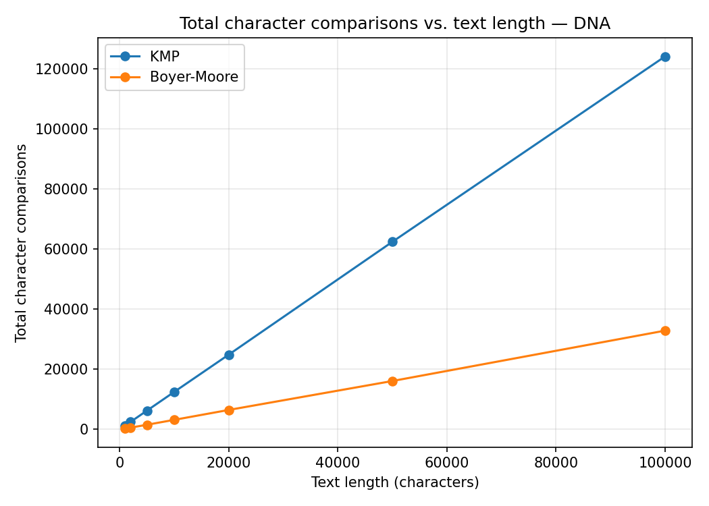
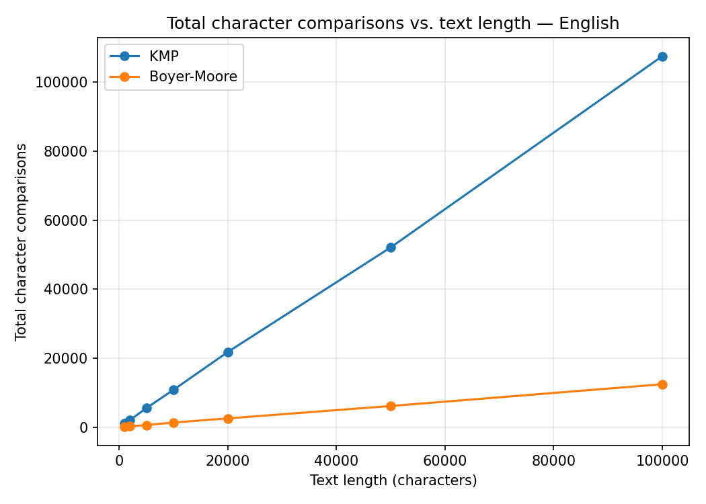
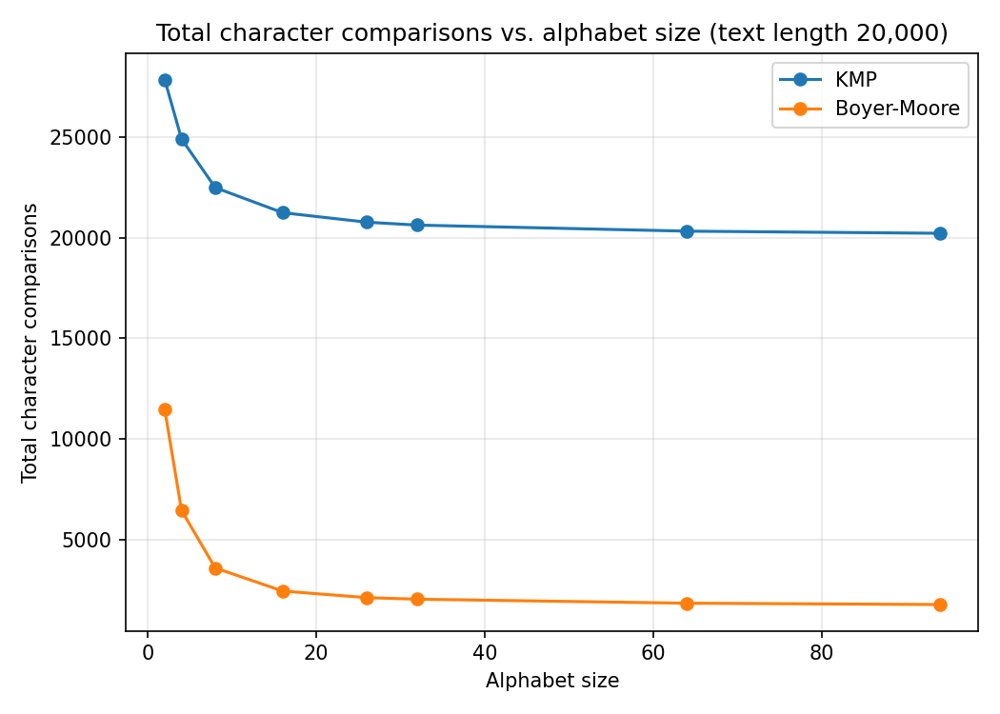
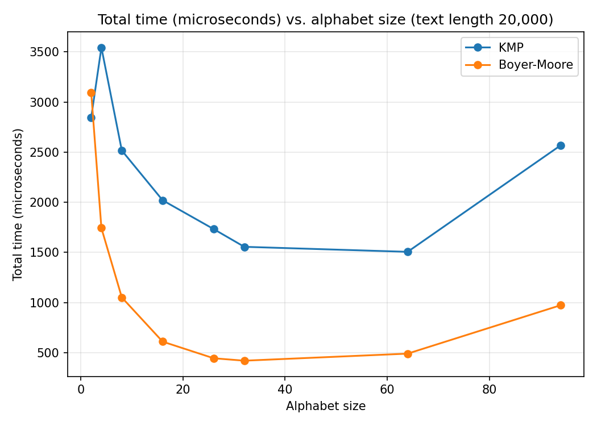

1. Interactive Visualizer
Presets:
KMP LPS array
Comparisons: 0
Preprocessing comparisons: 0
Matches found: 0
LPS (failure) array
Boyer-Moore Bad-char + good-suffix
Comparisons: 0
Preprocessing comparisons: 0
Matches found: 0
Good-suffix shift table
comparing (match)
comparing (mismatch)
matched this alignment
confirmed occurrence
2. Benchmark Results
Measured with the Python reference implementation across text lengths and alphabet sizes
(DNA = 4 symbols, English prose ≈ 27 symbols, synthetic uniform alphabets up to 94 symbols).
Full methodology and raw CSVs are in the benchmark-data/ folder.




Key findings
- At 100,000 characters of DNA text, KMP performs ≈1.24 comparisons per character
(bounded by its
≤2nguarantee) vs. Boyer-Moore's ≈0.33 — about 3.7× fewer comparisons. - On English-like prose (larger alphabet), Boyer-Moore's advantage widens further (≈0.12 comparisons/char) because bad-character skips get larger as symbols repeat less often.
- KMP's comparison count stays almost flat across alphabet sizes — its guarantee depends on pattern self-similarity, not alphabet size — while Boyer-Moore improves sharply as the alphabet grows, then plateaus past ≈30 symbols.
- On an adversarial
"aaa...ab"pattern, KMP's comparisons barely change (trueO(n)worst case), confirming it never degrades.
3. Complexity Summary
| Algorithm | Preprocessing | Worst-case matching | Typical (large alphabet) |
|---|---|---|---|
| KMP | O(m) | O(n) | O(n) |
| Boyer-Moore | O(m + σ) | O(n) with strong good suffix | O(n/m) best case, sub-linear typical |
n = text length, m = pattern length, σ = alphabet size.